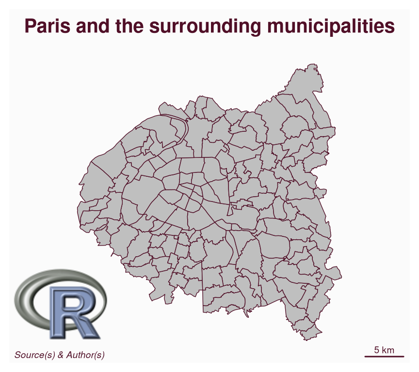
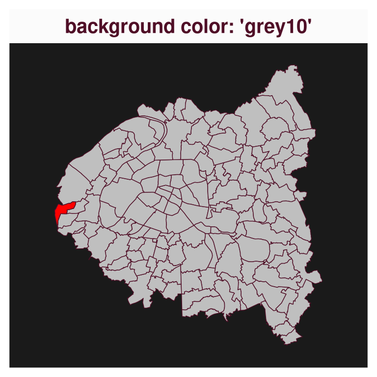
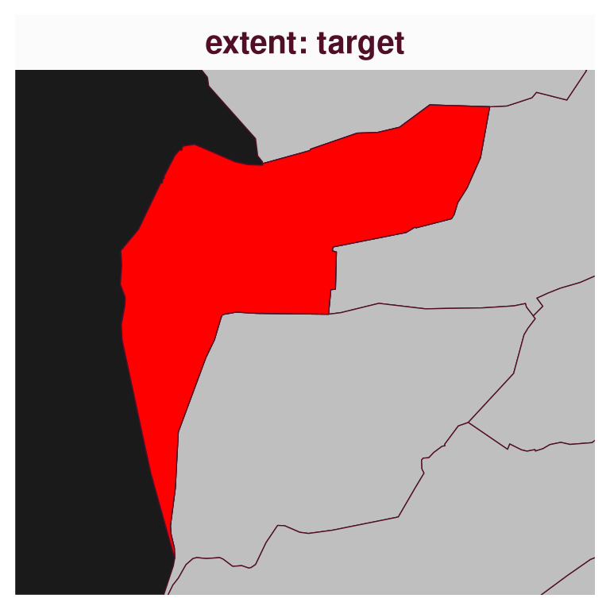
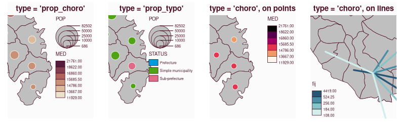
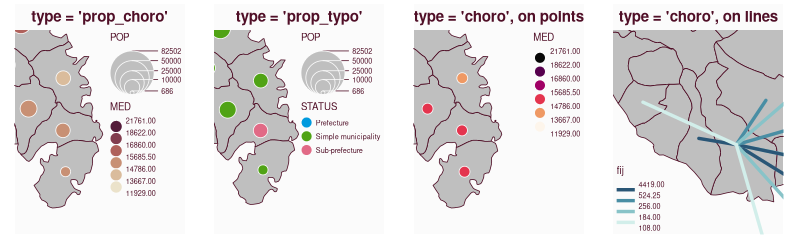
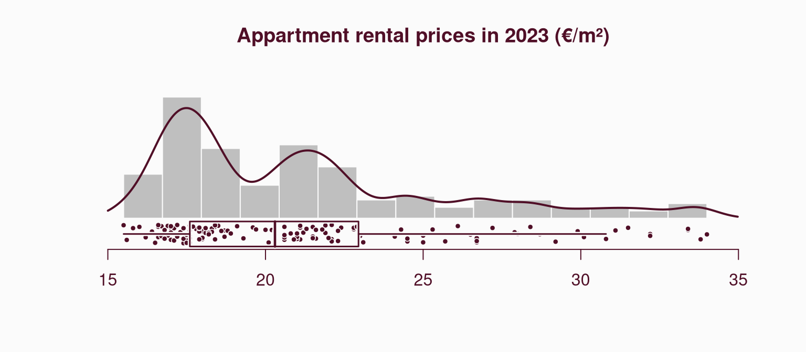
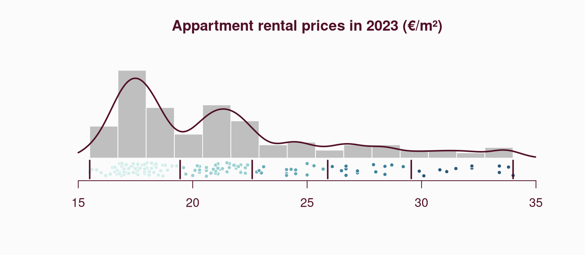

library(mapsf)
com <- sf::st_read("com.gpkg", quiet = TRUE)
mf_map(com)
mf_scale()
filepath <- "Rlogo.png"
mf_logo(filepath, pos = "bottomleft", adj = c(0, 4))
mf_credits()
mf_title("Paris and the surrounding municipalities")
mapsf: version 1.2.0mapsf is a thematic cartography package for R that helps to design different kinds of maps, such as proportional symbols, choropleths, or typology maps.
This post shows some of the new features introduced by the last release of the package:
mf_map() to use an extent and a background colormf_map()The dataset used in this post is about apartment rental prices in 2023 in Paris and the surrounding municipalities (source).
Download the dataset:
mf_logo() can be used to display an image on a map. It supports PNG and JPG/JPEG file formats.
library(mapsf)
com <- sf::st_read("com.gpkg", quiet = TRUE)
mf_map(com)
mf_scale()
filepath <- "Rlogo.png"
mf_logo(filepath, pos = "bottomleft", adj = c(0, 4))
mf_credits()
mf_title("Paris and the surrounding municipalities")
The following figure provides an overview of the various options available for displaying text on a map using the mf_text() function. The code for the figure can be found in the documentation.

mf_text() replaces the now deprecated function mf_annotation(). mf_label() will probably use mf_text() internally in a future version of mapsf.
mf_map() to use an extent and a background colorThe extent argument allows a spatial object to be passed to mf_map() in order to define the map extent. The bg argument allows a background color to be passed to the map.
# define a target
target <- subset(com, NOM == "Vaucresson")
# define map background
mf_map(com, bg = "grey10")
mf_map(target, col = "red", add = TRUE)
mf_title(txt = "background color: 'grey10'")
# define map extent
mf_map(com, extent = target, bg = "grey10")
mf_map(target, col = "red", add = TRUE)
mf_title(txt = "extent: target")

Benefiting from the last update of maplegend, various legends have been improved. These legends now more closely reflect what is displayed on the map in terms of symbols shapes and colors.


# install.packages("maplegend_0.5.0.tar.gz", repos = NULL, type = "source")
# install.packages("mapsf_1.1.0.tar.gz", repos = NULL, type = "source")
library(mapsf)
png("legend_old.png", width = 798, height = 249, res = 110)
par(mfrow = c(1,4))
mf_theme( mar = c(1,1,2,1))
m <- mf_get_mtq()
mf_map(m[17, ], expandBB = c(0,0,0,1))
mf_map(m, add = T)
mf_map(m, c("POP", "MED"), "prop_choro", inches = .2, leg_pos = "topright")
mf_title("type = 'prop_choro'")
mf_map(m[17,], expandBB = c(0,0,0,1.1))
mf_map(m, add = T)
mf_map(m, c("POP", "STATUS"), "prop_typo", inches = .2,leg_pos = "topright")
mf_title("type = 'prop_typo'")
mf_map(m[17,], expandBB = c(0,0,0,1))
mf_map(m, add = T)
mf_map(sf::st_centroid(m), "MED", "choro", leg_pos = "topright", pal = "Rocket", add = TRUE)
mf_title("type = 'choro', on points")
mob <- read.csv(system.file("csv/mob.csv", package = "mapsf"))
# Select links from Fort-de-France (97209))
mob_97209 <- mob[mob$i == 97209, ]
# Create a link layer
mob_links <- mf_get_links(x = m, df = mob_97209)
mf_map(expandBB = c(0,1,0,0), x = m[9, ])
mf_map(m, add = TRUE)
mf_map(mob_links, "fij", "choro", leg_pos = "bottomleft", pal = "Teal", add = TRUE, lwd = 3)
mf_title("type = 'choro', on lines")
dev.off()
# install.packages("mapsf")
library(mapsf)
png("legend_new.png", width = 798, height = 249, res = 110)
par(mfrow = c(1,4))
mf_theme( mar = c(1,1,2,1))
m <- mf_get_mtq()
mf_map(m, extent = m[17, ], expandBB = c(0,0,0,1))
mf_map(m, c("POP", "MED"), "prop_choro", inches = .2, leg_pos = "topright")
mf_title("type = 'prop_choro'")
mf_map(m, expandBB = c(0,0,0,1.1), extent = m[17, ])
mf_map(m, c("POP", "STATUS"), "prop_typo", inches = .2,leg_pos = "topright")
mf_title("type = 'prop_typo'")
mf_map(m, expandBB = c(0,0,0,1), extent = m[17, ])
mf_map(sf::st_centroid(m), "MED", "choro", leg_pos = "topright", pal = "Rocket", add = TRUE)
mf_title("type = 'choro', on points")
mob <- read.csv(system.file("csv/mob.csv", package = "mapsf"))
# Select links from Fort-de-France (97209))
mob_97209 <- mob[mob$i == 97209, ]
# Create a link layer
mob_links <- mf_get_links(x = m, df = mob_97209)
mf_map(m, expandBB = c(0,1,0,0), extent = m[9, ])
mf_map(mob_links, "fij", "choro", leg_pos = "bottomleft", pal = "Teal", add = TRUE, lwd = 3)
mf_title("type = 'choro', on lines")
dev.off()mf_distr() displays the statistical distribution of a variable with a histogram, a box plot, a strip chart and a density curve on the same plot. This graphic can be useful for selecting an appropriate classification method for choropleth maps.
With this release, user-defined class boundaries can also be displayed on the plot. Some arguments have been added to allow changes to the title, y-label and y-axis.
mf_distr(com$loypredm2, main = "Appartment rental prices in 2023 (€/m²)", yaxt = FALSE)
# compute class intervals
bks <- mf_get_breaks(com$loypredm2, nbreaks = 5, breaks = "ckmeans")
# display class boundaries on the plot
mf_distr(com$loypredm2, main = "Appartment rental prices in 2023 (€/m²)",
yaxt = FALSE, pal = "Teal", breaks = bks)
mf_map()The relevant arguments and default values differ for each map type. The documentation has been updated, with each map type now described in a dedicated help page. These pages provide relevant arguments and examples for points, lines, and polygon objects.
See the help pages for base maps, choropleth maps, typology maps or proportional symbols maps on the website.
Alternatively, you can access this documentation directly from R with e.g. ?mf_map_base, ?mf_map_choro, ?mf_map_typo or ?mf_map_prop.
A new ?mapsf-deprecated help page has been added in order to explicitly inform users about the deprecations going on in the package.
The following functions and features are currently deprecated, they still work but they will be removed in the next major version of the package.
mf_map sub-functions (mf_base(), mf_choro(), mf_prop()…) are deprecated. Instead of using these functions, one must use mf_map() with the corresponding type.mf_init() is deprecated. It is possible to use mf_map() (mf_map(x, type = "base", col = NA, border = NA)) or the extent argument of mf_map() instead.mf_export() is deprecated, use mf_png() or mf_svg() instead.mf_annotation is deprecated, use mf_text() instead.leg_pos = NA and mf_legend() if separated legends are needed.mf_theme(), the following themes are deprecated: “default”, “brutal”, “ink”, “dark”, “agolalight”, “candy”, “darkula”, “iceberg”, “green”, “nevermind”, “jsk” and “barcelona”.?mf_theme() for details.See the NEWS file for the complete list of changes.